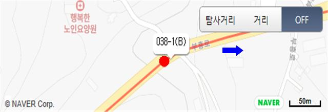
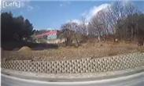
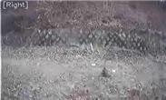
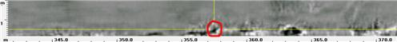
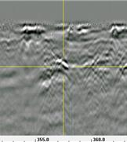
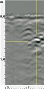
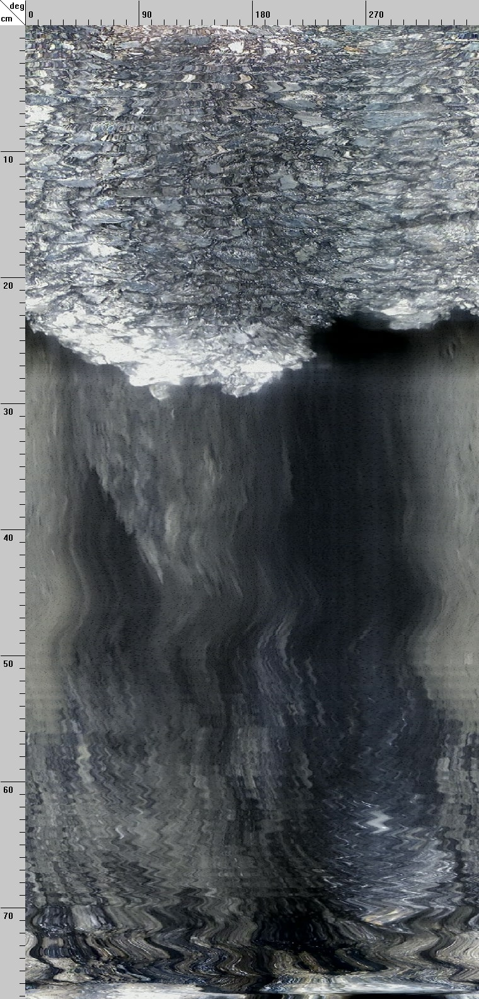
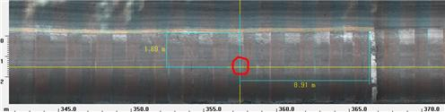

분석 공동조사서
|
||||||||||||
|---|---|---|---|---|---|---|---|---|---|---|---|---|
| 탐사 / 천공 | 탐사일 2022.02.15 / 천공일 - | 위 치 |
위도 | 37.816955 | 공동규모 | 토피(㎝) | 53 | 공동관리 | 번호 | - | ||
| 관 할 구 | 백석읍 | 경도 | 126.947396 | 도로종단 길이(㎝) | 95 | 등급 | - | |||||
| 도로명 주소 | 연곡리 327 | 차선 | 중앙선 기준 1차로 | 도로횡단 폭(㎝) | 69 | 분석공동 | 번호 | 038-1 | ||||
| 탐 사 방 향 | 비암리 29-1→연곡리 327-2 | 지점 | 정지선 후방 8.91m | 바닥 깊이(㎝) | - | 등급 | - | |||||
| 공동 위치도 | 공동 주변사진 | |||||||||||
|  | ||||||||||||
|  |  | |||||||||||
| (상단) 탐사영상 평면 / (하단) 노면영상 | 탐사영상 수직단면 | 공동확인 내시경 영상 | ||||||||||
| 종단면 | 횡단면 | |||||||||||
|  |  |  |  | |||||||||
|  | ||||||||||||